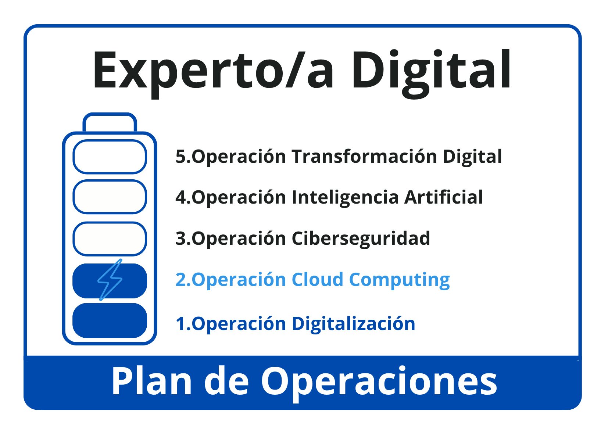

En aquesta segona operació del mòdul de Digitalització per a Grau Superior ens endinsarem en el món del Cloud Computing i descobrirem com el núvol s’ha convertit en un pilar essencial de la transformació digital de les empreses.
Al llarg del recurs treballarem diferents aspectes que ens permetran comprendre el paper estratègic del núvol i aprendre a aplicar-lo en entorns professionals reals.
- En primer lloc, veurem com les dades s’han convertit en un actiu essencial i com el cloud ens permet gestionar-les de forma segura, flexible i accessible des de qualsevol lloc.
- Després, coneixerem els principals usos estratègics del núvol en l’àmbit empresarial, des de l’emmagatzematge i la còpia de seguretat fins a la col·laboració en temps real o l’anàlisi de dades.
- També explorarem els models de serveis i infraestructures cloud disponibles (públiques, privades, híbrides, SaaS, PaaS, IaaS) i aprendrem a triar les solucions que millor s’adaptin a cada necessitat.
- A més, dedicarem un apartat a les alternatives lliures al núvol, com Nextcloud, que ens ofereixen un major control sobre la informació i reforcen la sobirania digital.
- Finalment, treballarem en el disseny bàsic d’un pla cloud dins d’una estratègia de transformació digital, integrant el núvol com un recurs clau per innovar i ser més competitius.
Aquesta operació inclou un repte final en què dissenyarem una proposta cloud adaptada a una empresa del nostre sector. Per a això analitzarem com treballa amb les seves dades, quins serveis necessita i quin tipus d’infraestructura seria la més adequada, elaborant un pla d’implantació realista i segur. Superada l’operació, obtindrem la nostra segona credencial que ens permetrà avançar cap a la certificació d’expert/a digital.

És important que totes les activitats i documentació vinculades a aquest desafiament estiguin correctament registrades a la nostra carpeta d’aprenentatge (LOG), ja que ens servirà com a eina per recopilar el treball realitzat, saber en quina fase ens trobem, tasques pendents i finalitzades, així com per reflexionar sobre el que hem après i tenir un banc de recursos útil i actualitzat.